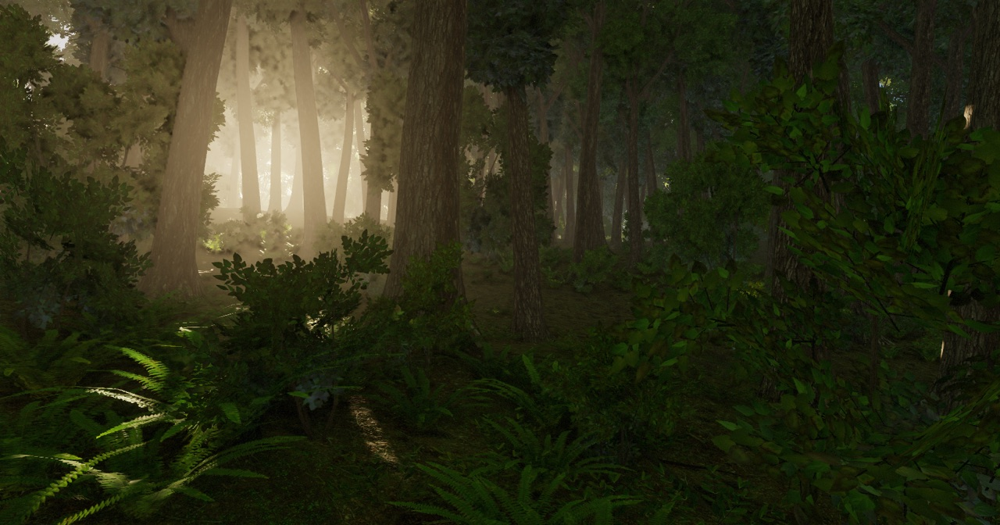

nibblet
Fishing gamecozy pixel-art fishing game
nibblet.cryptoler.net
Noctiluca
Ambient · soundAn ambient boids simulation in JavaScript.
boids.cryptoler.net
ingenium
Forest rendererA GPU-driven forest renderer in Rust and wgpu.
github.com/askel-dev/ingenium EYE
EYEThe Eye
Chat · closedRealtime chat for close friends. It said its last goodbye on October 23, 2026, after a lot of good conversations.
eye.cryptoler.net
Nobody's Meadow
Cooking gameSurvival cooking game
meadow.cryptoler.net